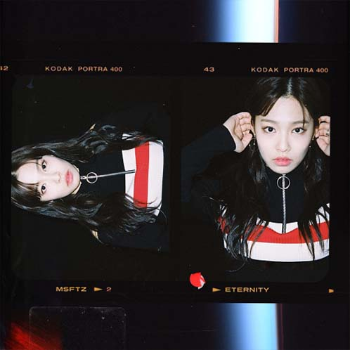

Msftz SoundCloud, <fantasy >
어렸을 때부터 아버지와 음악에 관해 이야기를 나눴다.
음악이 삶에서 중요한 부분을 차지하게 된 건 자연스러운 일이었다.
사람의 마음을 움직일 수 있는 음악을, 직접 만들면 멋지겠다는 생각이 들었고
오케스트라부와 밴드부를 거쳐 교회 반주를 했다.
곡 작업은 2017년부터 시작했다.
음악 하는 친구들이 음원 공유·다운로드 사이트 '사운드 클라우드'에 본인 곡을 공개하는 것을 보고,
치킨(Chicken)이라는 이름으로 곡을 올렸다. 그렇게 쌓인 스트리밍 기록만 180만이 넘는다.
비주류 아티스트가 한번에 메인스트림에 있는 소속사에 들어가는 것이 쉬운일만은 아닌데,
전형적인 노래를 만드는 것도 아닌데다, 얼굴도 공개되지 않았던 아티스트였기에
더욱 특이한 케이스가 되었다. 하지만 그만큼 노래만으로 사람들의 마음을 움직일수 있는
아티스트라는 것만은 확실했다.